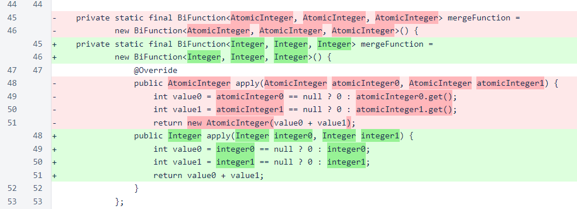
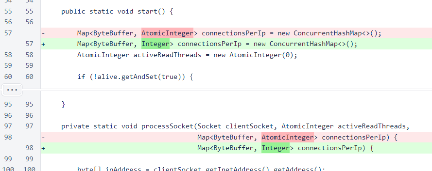
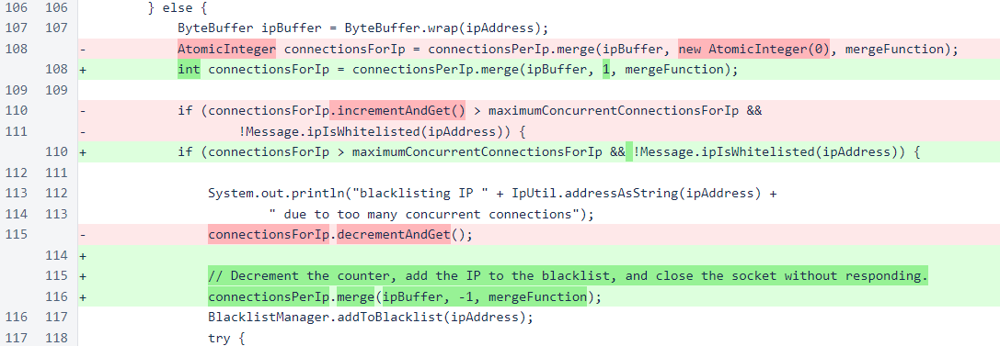
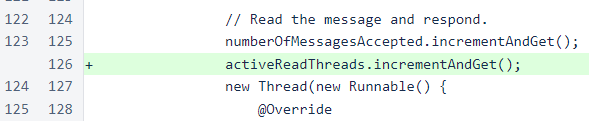
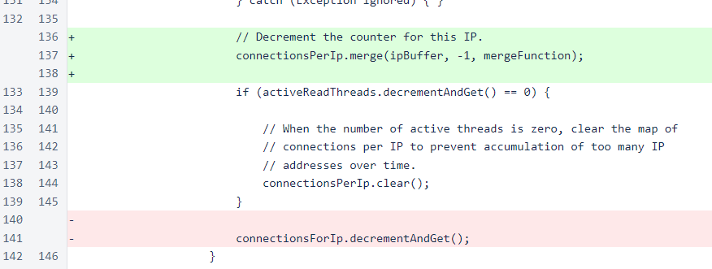
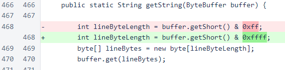

Nyzo version 501 (commit on GitHub) corrects blacklist logic issues in the MeshListener class.
This version affects the verifier only. The sentinel does not use the MeshListener class.
Two separate logic errors in the MeshListener class were causing incorrect accumulations of concurrent-connection counts, resulting in erroneous and recurrent blacklisting of many IP addresses. While some protection mechanisms are mitigating this problem, the issue is serious, and all verifiers should update as soon as possible.
The first, more serious, logic error was in the handling of the merge() call on the connectionsPerIp map. This call was used to obtain AtomicInteger objects, and these objects were incremented and decremented directly. However, as each merge() call produced a new AtomicInteger object, any call to merge() that was followed by another call to merge() for the same IP before the corresponding decrement call would result in a permanent increase in the count for that IP address. Therefore, instead of tracking present concurrent connections per IP, the map functioned more as a historical aggregator of concurrent connections per IP.
The map is still used, but AtomicIntegers have been replaced with Integers, as atomic increments and decrements of the individual objects have been replaced with the atomic merge operation. The merge function has been rewritten to use Integer objects.
The map type arguments have been updated appropriately in the connectionsPerIp declaration and processSocket() signature.
All increment operations have been replaced with merge() calls with a value of 1, and all decrement operations have been replaced with merge() calls with a value of -1.
The other issue, while less serious on its own, eliminated a protection that would have prevented the first issue from inappropriately blacklisting verifiers. The first issue caused errors to accumulate in the connectionsPerIp map. The second issue prevented the connectionsPerIp map from being periodically cleared. While this periodic clearing of the map was only intended as a memory-conservation measure, it would have also erased the accumulated errors frequently enough that they would likely have never produced any symptoms.
The map was never cleared because the increment of activeReadThreads was omitted. Therefore, the value of activeReadThreads was always negative, never the value of exactly 0 required to trigger clearing of the map.
Finally, decrementing of the number of connections per IP has been moved just before clearing of the map instead of just after. If the decrement were performed just after clearing of the map, the value would incorrectly be -1 for the affected IP. This is a minor issue that would only increase the practical limit by 1 for that IP, but it is incorrect behavior.
In an unrelated change, the mask for string length has been corrected in the Message class. This corrects some issues with reading debug responses with long lines.
